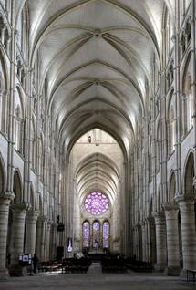
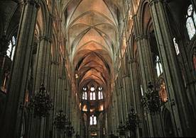
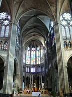

|
Os filodoxos perante a
História
(A filosofia e seu
inverso - III)
Olavo de Carvalho
17 de abril de 2012
I. A filosofia e seu inverso
II. De Sócrates a Júlio Lemos
III. Os filodoxos perante a História
Entre os
títulos que conferem a seus estudantes, as universidades
brasileiras deveriam ter o de Ph. D. na ciência de não entender nada.
Em nota publicada no site Ad Hominem,
o sr. Joel Pinheiro, comentando o
meu artigo “A filosofia e seu inverso II” e concordando comigo em que
não existe filosofia sem implicações morais e existenciais, dedica-se
em seguida a refutar a idéia, que ele atribui a mim, de que “o
escolasticismo medieval já era um período de decadência filosófica se
comparado à educação dada nas escolas de catedral, que consistia no
exemplo e no carisma do mestre e era veiculada por meio de doutrinas
não-escritas, passadas primariamente pela convivência e ao se assistir
o mestre filosofando in loco”.[1]
Contra essa idéia, ele alega que “esse tipo de educação moral e
preparação espiritual, embora muito louvável, não é propriamente
filosofia. Ela não pode questionar suas próprias bases, e nem debater a
sério, pois sua finalidade de formar um certo tipo de homem virtuoso já
está dada de antemão; e portanto não resultará em grandes filósofos”.
Prossegue ele: “A relação carismática, ou mesmo iniciática,[2] entre
mestre e pupilo não substitui o debate racional. É ridículo e ingênuo
imaginar que ‘sábios’ semi-anônimos do século XII que não deixaram obra
escrita tivessem pensamento superior ao dos grandes escolásticos. Os
poucos registros escritos que sobraram deles mostram que, muito pelo
contrário, seus pensamentos eram muito mais conservadores e
convencionais, ainda que belos e nobres.”
I
Antes de averiguar se o sr. Pinheiro tem ou não razão nessas coisas,[3]
é preciso notar que elas não têm nada a ver com o que eu disse no
artigo que ele imagina estar refutando. O que ali coloquei em discussão
não foi a qualidade da “filosofia propriamente dita” (no sentido que o
sr. Pinheiro dá a esta expressão) que se produziu nas escolas dos
séculos X a XII e da que se veio a produzir em seguida nas
universidades. Foram, em vez disso, as concepções educacionais do
Cardeal Newman, o posto que nelas ele atribuia à filosofia e, por isso
mesmo, a interpretação falsa que o sr. Júlio Lemos dera às palavras do
Cardeal. O sr. Lemos afirmava que o ensino da filosofia não deve ter
objetivos morais, e, por inépcia ou safadeza, citava em favor dessa
opinião um trecho em que Newman dizia precisamente o contrário.
Na segunda parte do artigo, analiso um pouco aquelas concepções em si
mesmas, assinalando que me pareciam falhar porque esperavam da
instituição universitária precisamente aquele resultado que o advento
dela tinha tornado inviável: a formação gentil-homem, marcado pelas
virtudes de “um intelecto cultivado, um gosto delicado, uma mente
cândida, equitativa e desapaixonada, uma conduta nobre e cortês” (a
cultivated intellect, a delicate taste, a candid, equitable,
dispassionate mind, a noble and courteous bearing in the conduct of
life). Esse resultado era precisamente o que haviam alcançado,
com
grande sucesso, as escolas catedrais e monacais dos séculos X a XII,
fazendo um contraste chocante com o que veio em seguida, a atmosfera de
carreirismo, pedantismo, corrupção e violência política que imperou nas
universidades do século XIII em diante. Na mesma medida em que os
alunos das escolas catedrais e monacais chegaram, pelo brilho das suas
virtudes, a ser conhecidos popularmente como “a inveja dos anjos”, o
típico estudante universitário que lhe sucedeu tinha antes a fama de
presunçoso, beberrão e arruaceiro, sendo célebre a hostilidade dos
habitantes das cidades à horda de estrangeiros arrogantes que ali
desembarcavam imunizados contra as leis locais por toda sorte de
privilégios corporativos.
O Cardeal Newman, contra o sr. Júlio Lemos, tinha toda a razão em
afirmar que o estudo da filosofia podia e devia contribuir para a
formação moral dos estudantes, como o fizera nas escolas catedrais e
monacais, mas também era verdade que a filosofia havia começado a
fracassar nesse objetivo desde o momento mesmo em que se constituíra
como profissão universitária e meio de ascensão social. Se essa
trajetória de decadência humana veio acompanhada de prodigiosos
aperfeiçoamentos da técnica lógico-dialética e da abertura de novos
espaços de livre discussão, propiciando assim o advento das grandes
realizações intelectuais da escolástica, isso mostra, com toda a
evidência, que esses avanços, em vez de somar-se às conquistas das
escolas catedrais em matéria de educação moral, a elas se substituíram
e acabaram por preencher todo o espaço da atividade educacional
superior. Não foi a primeira nem a última vez na História que a
degradação moral fez contraste com o progresso intelectual. O apogeu
mesmo da filosofia na Grécia, com Sócrates, Platão e Aristóteles, só
aconteceu quando já iam longe os belos dias de Péricles e a polis
afundava na roubalheira e na violência. Na Viena dos anos 20-30 do
século XX, o florescimento espetacular da filosofia e das ciências
humanas coincidiu com a debilitação do império romântico dos
Habsburgos, sacudido pela agitação comunista e nazista e roído desde
dentro pela corrupção dos políticos. Nenhum desses exemplos é motivo
para negar que seria melhor a moralidade e a cultura do intelecto
superior progredirem juntas, mas eles mostram que isso não acontece
facilmente.
Em nenhum momento coloquei em discussão a filosofia escolástica
enquanto tal, que o sr. Pinheiro se empenha em defender contra quem não
a atacou. Lembro-me de haver-me referido a ela como “monumentos de
exposição escrita”, o que não é uma expressão nada pejorativa, e até de
haver assinalado que o Cardeal Newman, ao referir-se negativamente a
filósofos do passado, não dissera “nem uma palavra sobre (muito menos
contra) a filosofia cristã de Sto. Tomás, de S. Boaventura, de Duns
Scot”. De que raio de coisa, pois, está falando o sr. Pinheiro? De algo
que ele pensou ter lido, mas não leu. Inventou. Uns vinte anos o
educador Cláudio de Moura Castro já advertia que no Brasil ninguém lê o
que os autores escrevem: lê o que imagina que eles pensaram, o que
gostaria que eles tivessem pensado, seja para aplaudi-los, seja para
depreciá-los. Tal como o célebre inglês da anedota, o leitor
brasileiro, nesse ínterim, não mudou em nada.[4]
O que confundiu a cabeça do sr. Pinheiro foi ter lido o meu artigo à
luz da crença rotineira de que a grande filosofia do século XIII foi um
fruto natural da universidade. Vistas as coisas por esse ângulo, daí
decorrem duas conseqüências. Primeira: o sr. Pinheiro acaba entendendo
a minha crítica às universidades medievais como se implicasse uma
depreciação da filosofia escolástica, o que só acontece na sua
imaginação. Segunda: dessa confusão ele é levado, como em ricochete, a
proclamar que as realizações notáveis da escolástica só não apareceram
mais cedo porque nas escolas catedrais e monacais vigorava um modelo
pronto de homem virtuoso, do qual não podiam resultar grandes
filósofos. Foi só quando aquele modelo se dissolveu na “livre
discussão” que uma “filosofia propriamente dita” pôde florescer. Ele
diz isso com toda a franqueza.
São erros, naturalmente, mas pelos quais sou muito grato, porque me
permitem levar a discussão para além das mancadas do sr. Júlio Lemos
que constituíam o seu assunto inicial, e explicar-me sobre pontos
incomparavelmente mais importantes.
Desde logo, a imagem que hoje temos do esplendor escolástico é
construída com base nuns quantos poucos nomes, especialmente Sto.
Alberto, Sto. Tomás, S. Boaventura e Duns Scot. Se os apagássemos dos
registros, o escolasticismo não teria passado de um episódio curioso na
história da educação. E esses não são nomes só de filósofos, mas de
Doutores da Igreja: três santos canonizados e um bem-aventurado. Não
existe o menor motivo para supor que na vida pessoal esses homens
tivessem uma conduta mais frouxa, menos estrita, menos perfeita que a
do “modelo pronto” que os anjos invejavam. Não vejo em que a dissolução
do modelo pela “discussão racional” poderia ter contribuído nem para a
sua santidade, nem para o fortalecimento do tipo especial de
inteligência ao mesmo tempo filosófica e mística que os caracteriza,
aquele não cresce fora e independentemente da graça santificante, mas
decorre dela como um dom especial do Espírito.
Também é ingenuidade supor que essas encarnações máximas do gênio
escolástico fossem produtos típicos do novo meio acadêmico, no qual,
bem ao contrário, não se ajustaram confortavelmente jamais. Sua
inteligência, sua rígida idoneidade, sua compreensão superior dos
mistérios da fé e, last not least,
sua coragem intelectual faziam
desses quatro mestres os alvos preferenciais das invejas, mesquinharias
e maledicências de seus colegas.
Alberto pulou como um cabrito para que a congregação engolisse, de má
vontade, suas teorias aristotélicas sobre o mundo físico. Boaventura
sofreu ataques medonhos de Guilherme de Saint-Amour, um potentado
universitário da época, no curso de uma campanha sórdida movida pelo
clero secular contra os Frades Mendicantes. Quem o defendeu foi Tomás,
que depois, também graças a intrigas de acadêmicos, foi por seu turno
denunciado como herético duas vezes (uma delas depois de morto). Duns
Scot foi expulso da universidade e teve de fugir de cidade em cidade,
ameaçado de morte, por defender doutrinas impopulares e tomar o partido
do Papa na disputa com o poder real, hegemônico entre os intelectuais
na ocasião. Só cinco séculos depois da sua morte ele foi retirado da
lista dos indesejáveis, quando sua grande doutrina da Imaculada
Concepção de Maria foi finalmente aceita e se tornou dogma da Igreja.
Sua beatificação só veio ainda um século depois disso, em 1993.
No mínimo, no mínimo, o sr. Pinheiro, ao enaltecer as vitórias
intelectuais da escolástica acima das virtudes “meramente morais” do
monaquismo que a antecedeu, deveria ter tido a prudência de notar que
os quatro autores maiores daquelas vitórias, aqueles que acabo de
mencionar, não podiam de maneira alguma ser universitários típicos,
pelo simples fato de que não eram membros do clero secular que dominava
as universidades, e sim, bem ao contrário, vieram das ordens
monásticas, nas quais se conservava ainda a disciplina moral das velhas
escolas. O contraste entre as mentalidades desses dois grupos era tão
pronunciado, que os professores ofereceram uma resistência feroz ao
ingresso de monges no corpo docente das universidades (v. o episódio de
Boaventura que mencionei acima). Bem, sem esse ingresso, a universidade
medieval estaria desprovida de Alberto, Tomás, Boaventura e Duns Scot –
de tudo aquilo que para nós, hoje, mais nitidamente caracteriza e mais
merecidamente enobrece a imagem da filosofia escolástica.
Sim, porca miséria, os quatro eram monges, intrusos na comunidade
universitária! Como poderiam ser típicos da corporação que rejeitava
sua presença? Longe de ser produtos característicos da universidade da
época, como o acredita o sr. Pinheiro, esses monges severos e devotos,
provindo de um meio social diferente, com hábitos e valores
contrastantes, se sobrepunham de tal modo àquele ambiente que só a
duras penas puderam ali sobreviver e, às vezes postumamente, triunfar.
A magnitude de suas realizações intelectuais deve-se menos à atmosfera
universitária do que à força de suas personalidades majestosamente
centradas, firmadas na fé e na integridade de propósitos, em contraste
com a sofisticada tagarelice de seus colegas, muitas vezes tecnicamente
admirável, mas com tanta freqüência inspirada em motivos fúteis e na
sedução das novidades heréticas. Quando hoje enxergamos a universidade
medieval como um momento luminoso na história da educação, é em grande
parte porque os melhores homens que ela rejeitou projetam
retroativamente sobre ela o brilho da sua glória, e não ao inverso. E
essa glória, sem dúvida, vem mais das ordens monásticas que os
formaram, que do meio social onde ingressaram já adultos, fortes o
bastante para desafiá-lo e, a longo prazo, vencê-lo. Se, quando critico
a universidade medieval, o sr. Pinheiro entende que estou falando mal
da filosofia dos grandes escolásticos, é, em parte, por seu
desconhecimento da história, em parte por seguir o consagrado erro de
ótica que coletiviza os méritos individuais e toma as exceções como
regras, como se as cátedras universitárias na época estivessem
superlotadas de homens da estatura de Tomás e Alberto, e não de
técnicos, burocratas, agitadores, doutrinários de dedinho em riste,
bedéis e uma infinidade de puxa-sacos.
Não é culpa do sr. Pinheiro, é do vício generalizado de entender os
grandes homens como “produtos do seu tempo”, quando justamente a
grandeza deles consistiu em quebrar a redoma da ideologia de época e
injetar no organismo da cultura, a um tempo e contra a resistência do
ambiente, a sabedoria esquecida de um passado remotíssimo e as mais
inimagináveis perspectivas de futuro.
No caso da filosofia escolástica, toda ela inspirada por aberturas para
a eternidade que nenhum condicionamento histórico-social jamais poderia
explicar, isso deveria ser perceptível à primeira vista.
Só os medíocres são filhos do seu tempo. Os sábios, os heróis e os
santos inspirados são pais dele; são canais por onde a luz da
transcendência rompe as limitações do tempo e abre possibilidades
que a mente coletiva, por si, jamais poderia conceber. Se a opinião
corrente não enxerga isso, é porque o acesso de milhões de incapazes às
altas esferas das profissões universitárias obriga hoje a conceber a
História sub specie mediocritatis.
Que Alberto e Tomás revivificassem
uma filosofia velha de mil e setecentos anos, fazendo-a enfim
predominar sobre o rígido agustinismo dominante, e que Duns Scot,
contra vento e maré, antecipasse em cinco séculos um dogma da Igreja,
são fatos que deveriam fazer os devotos do condicionamento histórico
pelo menos coçar as cabeças, se alguma tivessem.
Mas a esse erro de perspectiva generalizado, que se disseminou ao
ponto de infectar até mesmo os manuais escolares, o sr. Pinheiro
acrescenta um outro que, se não é de sua própria invenção, também não é
compartilhado pela massa ignara, mas tão somente por uma parte da elite
profissional de filodoxos: a idéia de que só existe filosofia na
doutrina explícita, desenvolvida, organizada, publicada, racionalmente
verbalizada e argumentada até seus últimos detalhes.
A idéia tem origem ilustre. Remonta a Georg W. F. Hegel, o que,
convenhamos, impõe algum respeito. Mas, como tantas outras opiniões que
herdamos desse genial embrulhão, é completamente falsa. Sem mencioná-la
expressamente nem citar-lhe a fonte (que talvez nem mesmo conheça),
escreve o sr. Pinheiro, como se impelido mediunicamente pelo espírito
de Hegel:
“O foco na relação mestre-discípulo e na
sabedoria não-verbal (e que,
por isso, não pode ser escrito sem ser, em alguma medida, traído)[5]
nos aproxima novamente dos
sonhos tradicionalistas e perenialistas, dos
sistemas simbólicos esotéricos e da imersão em tradições orais.[6]
Mas
Filosofia é perseguir avidamente o real; e isso é a fuga consumada... É
estranho que ele [Olavo de Carvalho] e tantos de seus seguidores
continuem a ter esse tipo de fantasia como ideal de vida e de formação
filosófica.”
Na galeria universal das condutas vexaminosas, poucas se comparam ao
gosto que os brasileiros têm de se fazer de superiores àquilo que não
entendem. Nem todos os nossos compatriotas padecem desse vício, menos
ainda são os que o trazem do berço, mas muitos o adquirem logo no
começo da vida adulta, sob o nome de “formação universitária”.
As palavras do sr. Pinheiro, que soam tão óbvias e inquestionáveis aos
seus próprios ouvidos, contêm embutida uma multidão de problemas
cabeludos que ele nem mesmo percebe.
II
Desde logo, se excluirmos da área de estudos filosóficos sérios as
tradições orais, teremos de dizer adeus não só a boa parte do
platonismo, mas a todo o ensino universitário que não esteja registrado
em textos. A única razão de ser das universidades, aliás, é justamente
aquela parte do treinamento intelectual superior que não pode ser
obtida por mera leitura, mas requer o contato direto entre mestre e
discípulo. Se não fosse assim, as instituições universitárias poderiam,
com vantagem, ser fechadas e substituídas pela indústria editorial.
Isso vale não só para o aprendizado filosófico, mas também para as
artes, as técnicas e as ciências. E, em todos esses casos, falar de
contato direto é incluir aí uma parcela indispensável de comunicação
não verbal. Hoje em dia não há pesquisa científica que não exija o uso
de instrumentos cujo manejo requer longa prática junto a um técnico
habilitado que pouco poderia transmitir a seus alunos só pela instrução
verbal, sem o contato visual e manual com os equipamentos e sem
socorrer-se de gestos, posturas, entonações e olhares cuja tradução em
palavras seria praticamente impossível. Se não fosse assim, qualquer um
poderia formar-se técnico em tomografia cumputadorizada, em microscopia
estereoscópica ou em galvanometria balística pela simples leitura de
manuais de instruções. Poderia também tornar-se cantor de ópera, pintor
ou dançarino sem ter jamais presenciado um exemplo vivo de como se
canta, se pinta ou se dança.
O peso desse fator é tão crucial na investigação científica, que
negligenciá-lo pode destruir as mais belas esperanças das ciências de
constituir-se em conhecimento objetivamente verificável. Uma verdade,
em ciência, não vale nada enquanto não se transforma numa crença
coletiva subscrita pela comunidade dos cientistas profissionais, mas,
assinala Theodore M. Porter, “a prática científica diária tem tanto a
ver com a transmissão de habilidades e práticas quanto com o
estabelecimento de doutrinas teóricas”. Nos anos 50 do século passado,
Michael Polanyi já enfatizava que a pesquisa científica envolve um tipo
de “conhecimento tácito” que não pode sequer ser formulado em regras.
“Na prática, prossegue Porter, isso significa que os livros e os
artigos de revistas científicas são veículos necessariamente
inadequados para a comunicação desse conhecimento, uma vez que aquilo
que mais interessa não pode ser comunicado em palavras (grifo
meu)”[7]
Elimine-se a transmissão não-verbal, portanto, e toda via de acesso à
investigação científica estará fechada de uma vez por todas.
Como se vê, a investida do sr. Pinheiro contra o não-verbal nasce da
ojeriza irracional ante puros estereótipos da cultura vulgar e não
reflete nenhum exame sério da questão substantiva.
2. No caso específico da filosofia, o papel do contato pessoal, dos
círculos de amizade e das lealdades corporativas na formação das
escolas e correntes filosóficas, bem como na assimilação e modelagem
mental dos recém-chegados, é hoje um consenso amplamente admitido nesse
importantíssimo ramo de estudos que é a sociologia da filosofia.[8]
Importantíssimo não só para os sociólogos como para os filósofos
mesmos: o filósofo que ignore as bases sociais da sua existência
profissional é como um boneco de ventríloquo limitado à triste função
de fazer eco a influências que não sabe de onde vieram nem para onde
levam. Ouso dizer que na classe acadêmica brasileira essa ignorância é
quase obrigatória.
Mais relevante ainda, sob esse aspecto, é o estudo de como se formam e
se desfazem os prestígos pessoais que marcam indelevelmente o perfil
histórico da filosofia num dado período. Como foi possível, por
exemplo, que certos filósofos (ou filodoxos) alcançassem uma audiência
muito maior, nas universidades e fora delas, do que seus contemporâneos
mais habilitados, produzindo linhas de influência duráveis e
verdadeiras tradições de pensamento, enquanto as obras de seus
concorrentes caíam no completo esquecimento? Seria uma ingenuidade
imperdoável pensar que se trata aí de puros “fatores externos” alheios
ao “valor intrínseco” ou ao “conteúdo filosófico propriamente dito” das
obras em questão. A população estudantil só tem acesso ao
“conteúdo filosófico propriamente dito” das obras que lê, não das que
ignora – e a seleção reforça, automaticamente, as influências
intelectuais dominantes, consagrando como decretos inquestionáveis da
natureza das coisas os critérios de “valor intrínseco” que aí
prevalecem e, portanto a visão da história da filosofia, às vezes
barbaramente subjetiva e enviezada, que aí se toma como expressão
direta e óbvia da verdade dos fatos.
Ora, quando procuramos investigar como se formam aqueles prestígios,
descobrimos que o mecanismo principal que os origina são os círculos de
relações pessoais, onde os interesses corporativos e as lealdades
politicamente interesseiras se mesclam indissoluvelmente ao culto
devoto de personalidades carismáticas envolvidas, no mais das vezes sem
merecimentos objetivos que o justifiquem, numa aura de sapiência
mística que separa rigidamente os iniciados e os profanos.
Estudando a carreira de quatro dos mais prestigiosos pensadores do
século XX que ele denomina “os mestres malignos” – Wittgenstein,
Lukács, Heidegger e Gentile –, e perguntando por que suas sombras
encobriram os vultos de seus contemporâneos igualmente capazes, ou mais
capazes, o filósofo australiano Harry Redner conclui:
“Em última análise, o que distinguia
os mestres malignos de seus
colegas não menos capacitados era uma personalidade carismática que
acabou por fazer tantas gerações de amigos, seguidores e estudantes
prosternar-se diante deles com temor reverencial. Quase todos os que
encontraram um mestre maligno sentiram estar em presença de um gênio.
Eles tinham essa capacidade de impressionar desde o início de suas
carreiras... É difícil pensar em qualquer grande filósofo do passado
que tenha sido tão revenciado no seu tempo como eles o foram.
“Os seguidores que formavam em torno
de cada um dos
mestres malignos têm alguns dos traços dos círculos mais estreitos e
mais amplos de qualquer movimento carismático. Cada um deles esteve
rodeado de círculos esotéricos e exotéricos de amigos e seguidores.
Mais perto do mestre estava um grupo de discípulos ou companheiros
próximos; mais à distância havia os simpatizantes e
companheiros-de-viagem; e em volta desse núcleo estava a massa dos
estudantes e leitores interessados.”[9]
Na formação desse culto não faltava jamais a força
do elemento mágico, manipulado com requintes cênicos de sedutores
profissionais. Na ascensão de Martin Heidegger, Karl Löwith destaca o
poder da sua “arte de encantamento” que “atraía personalidades mais ou
menos psicopáticas”. Nas conferências que proferia, “seu método
consistia em construir um edifício de idéias que em seguida ele mesmo
desmantelava, de novo e de novo, para desnortear os ouvintes
fascinados, só para no fim deixá-los completamente no ar”.[10] Qualquer
semelhança com os procedimentos retóricos do esoterista armênio George
Ivanovitch Gurdjieff não é mera
coincidência. Gurdjieff levava seus
discípulos à mais completa impotência intelectual mediante a prática de
expor complexos sistemas cosmológicos, acompanhados das demonstrações
matemáticas mais sofisticadas e, quando a platéia se sentia
diante mais sólida verdade científica, desmantelar tudo com refutações
arrasadoras. A única diferença que tais casos revelam entre essa
pedagogia e a dos antigos monges é que estes usavam o poder do carisma
para infundir virtudes, ao passo que as celebridades filosóficas ou
esotéricas do século XX o empregam como instrumento de dominação
psíquica para instituir o culto de suas próprias pessoas.
Mas, evidentemente, a função dos círculos de convivência direta não se
resume em criar ídolos. Tem também uma utilidade menos personalizada,
mais coletiva, que é a de impor a hegemonia de grupos de influência
mediante a interproteção mafiosa, a promoção mútua, o boicote dos
adversários, o rateio dos melhores empregos entre os membros da gangue
e, em resultado de tudo isso, o controle da opinião pública,
especialmente em ambientes limitados e abarcáveis como o são as
universidades e as instituições de cultura.
As filosofias dos “mestres malignos”, segundo Redner,
“tendiam a gravitar em direção às elites
universitárias porque, na luta
pelo poder acadêmico, o status de elite interessa muito para atrair
discípulos e lançar movimentos de influência. Dessas posições de alto
status era fácil supervisionar e dominar todos os postos nas
universidades colocadas mais em baixo. Nas escolas de elite dos países
dominantes, como a École Normale na França e a Ivy League na América, a
filosofia podia ser cultivada como uma mística para os privilegiados e
iniciados. Só aqueles que ingressavam nessas instituições e passavam
por elas como estudantes e professores tinham alguma chance de adquirir
o conhecimento filosófico ‘apropriado’ e de ser considerados
qualificados nele. Por esses meios, umas poucas universidades foram
capazes de monopolizar o ensino da filosofia e usar esse poder para
colonizar o sistema acadêmico inteiro de determinados países. Uma
típica relação colonialista centro-periferia se instaurou entre a elite
e o resto; com isso as universidades de elite se habilitaram a
perpetuar e consolidar sua exclusividade e seu status superior.”
O “conteúdo propriamente dito” das filosofias não era de maneira alguma
indiferente ao papel que desempenhavam na estrutura do poder
universitário:
“As filosofias que serviam a essa função de
preservar o monopólio
profissional tinham de ser aquelas que ninguém podia aprender por meio
de livros somente. Tinham de ser aquelas que ninguém fora do quadro
institucional privilegiado podia adquirir, transmitir ou praticar. Elas
podiam ser aprendidas somente se fossem adquiridas através dos canais
corretos e recebidas das mãos apropriadas. Tais eram, de fato, as
filosofias que os próprios mestres malignos e, por direito de sucessão,
seus discípulos, vieram a ministrar desde as escolas de elite onde
haviam conquistado posições de poder. Ninguém que não passasse pelas
suas mãos podia praticar, ensinar ou mesmo discutir suas
filosofias.”[11]
Um exemplo muitíssimo bem documentado de como esse processo funciona
num país em particular é dado no livro de Hervé Hamon e Patrick Rotman,
Les Intellocrates,[12]
que estuda a composição social da elite que
comanda a vida universitária e a imprensa cultural na França. Essa
elite inteira mora em Paris, distribuída nuns poucos quarteirões
vizinhos, e tem na convivência pessoal constante um dos seus mecanismos
essenciais de autopreservação e crescimento.
O contato direto entre mestres, colaboradores e discípulos, como se vê,
não perdeu nada da importância essencial que tinha nos séculos X a XII.
Apenas mudou de função: de gerador de santos transmutou-se em fábrica
de carreiristas, agitadores, gerentes da indústria cultural,
bajuladores e militantes. Talvez por isso mesmo tenha se tornado menos
visível a observadores desatentos como os srs. Lemos e Pinheiro:
é da natureza mesma dos círculos de poder o hábito de manter a sua
existência o mais discreta possível, de modo a fazer com que os efeitos
de suas ações apareçam como resultados acidentais e anônimos do
processo histórico.
Não por coincidência, uma das correntes filosóficas que mais veio a se
beneficiar da luta dos grupos de influência pelo domínio monopolístico
das universidades foi, precisamente, a “filosofia científica”, ou
neopositivista, que o sr. Júlio Lemos coloca tão celestialmente
acima do mundo humano.
Não há nisso, aliás, nada de estranho. O neopositivismo é, como o
próprio nome diz, continuação do positivismo, que nasceu não como pura
filosofia teorética para uso dos anjos, mas como projeto de poder, um
dos mais ambiciosos e totalitários de todos os tempos.
Quando, após a II Guerra, o crescimento vertiginoso da economia
ocidental acelerou o processo de transformação da filosofia em
profissão universitária, eliminando da cena, pouco a pouco, os
“intelectuais públicos” que antes davam o tom dos debates
culturais,[13] nem todas as filosofias se adequavam igualmente ao novo
ambiente em que as discussões filosóficas tinham de imitar o mais
fielmente possível o mecanismo altamente regulamentado e burocratizado
da intercomunicação científica.
Na Europa continental, onde a discussão filosófica estava imantada de
uma carga partidária e militante consagrada por décadas de confronto
ideológico, a solução foi infundir no discurso tradicional da esquerda
uns toques de linguagem científica extraídos principalmente da
lingüística e da matemática. Daí nasceram o estruturalismo e o
desconstrucionismo que logo ocuparam o lugar do existencialismo e da
fenomenologia nas atenções do público.
Nos países anglo-saxônicos, ao contrário, onde a tendência dominante
era manter as universidades bem integradas no funcionamento geral da
economia e imunizadas contra o risco das rotulações ideológicas de
direita e de esquerda, esse foi o grande momento da “filosofia
científica”. O processo foi bem estudado por C. Wright Mills,[14] mas,
como a descrição que oferece é muito detalhada e complexa, recorro,
novamente, ao indispensável Redner, que assim a resume:
“A antiga geração de filósofos, que era uma
estranha mistura de
advogados, bibliotecários e cientistas, foi desalojada pelos
professores acadêmicos que se organizaram numa corporação profissional
com suas conferências, revistas especializadas, escadas de promoção e
todos os outros adornos das disciplinas acadêmicas. Nessas condições,
os filósofos já não podiam ser considerados livres-pensadores ou
intelectuais, como Russel Jacoby argumenta num estudo mais recente.
Para esses profissionais acadêmicos, a filosofia melhor adaptada às
suas exigências era uma que não dependesse de teorias, de idéias ou de
nenhum fundo de conhecimentos de ciência ou das humanidades, e que não
se engajasse em questões contenciosas da vida social e política. O que
eles queriam era um modo de filosofar que pudesse ser praticado como
uma habilidade técnica a ser aprendida pragmaticamente por meio de um
treinamento no próprio ambiente profissional por meio da discussão,
mais ou menos como o dos advogados.”[15]
Que é o “treinamento no próprio ambiente profissional”
senão o tão desprezível, tão dispensável contato direto entre
professor e aluno? Afinal, por que os advogados, entre os quais
o sr. Júlio Lemos, não estão habilitados para o exercício profissional
tão logo recebem seu diplominha, mas têm de fazer estágios em
escritórios de advocacia, ver com seus próprios olhos como funcionam
os tribunais, cartórios, registros de imóveis e delegacias de
polícia, aprender por experiência viva como se aborda um juiz
de direito, como se obtêm os favores de um escrivão, como se persuade
um cliente a negociar com a parte contrária? E quem não sabe que,
na prática, o profissional investido dessas habilidades levará
infinita vantagem sobre o bacharel eruditíssimo sem experiência
direta?
Se a “filosofia analítica” pode prescindir do contato
direto entre mestre e discípulo, por que teria sido justamente
essa a modalidade preferencial de ensino usada para impor o prestígio
dessa escola nas universidades americanas?
Tal como a ojeriza ao não-verbal, o desprezo ao ensino direto
é uma afetação, uma pose, adotada como reação irracional de momento,
não uma opinião maduramente pensada com conhecimento do assunto.
III
É pura fantasia do sr. Pinheiro acreditar que atribuí às escolas
catedrais e monacais a posse de uma “filosofia” superior
à escolástica do século XIII. Mas ele não erraria tanto se afirmasse
que enxergo nas primeiras uma sabedoria cristã superior à da média
dos professores e estudantes universitários que vieram depois
e que entendo a grande filosofia de Tomás, Alberto, Boaventura
e Scot menos como um “produto” do meio universitário
e mais como o desenvolvimento natural e, por assim dizer, a exteriorização
intelectual da cultura cristã herdada das escolas catedrais e
monacais através da formação monástica recebida na juventude por
esses quatro grandes mestres, que os imunizou contra a tagarelice
pedante, não raro herética, do meio universitário.
Que o florescimento de uma grande filosofia não surja do nada,
mas se produza como desenvolvimento intelectualmente diferenciado
de uma visão do mundo já anteriormente cristalizada em formas
simbólicas na cultura vigente é algo que não deveria surpreender
ninguém. Quem ignora que a concepção central da filosofia platônica,
a das leis eternas que se sobrepõem à ordem aparente de uma “natureza”
concebida à imagem e semelhança da ordem social vigente, já estava
prefigurada na poesia homérica e no teatro de Ésquilo e de Sófocles?
Aprendi em Paul Friedländer, Julius Stenzel e Eric Voegelin que
compreender uma filosofia não é só apreender o sentido explícito
das suas “teses”, nem discernir a estrutura do seu
“sistema”, nem muito menos saber compará-la com outros
“sistemas” (embora tudo isso seja uma preparação escolar
indispensável), mas desencavar, da sua formulação em conceitos
e doutrinas, as experiências reais que as inspiraram, a substância
humana e histórica que transmutaram em idéias abstratas.
Não se trata, evidentemente, de um preceito válido somente para
os historiadores e filólogos, mas de uma exigência básica indispensável
para quem quer que pretenda “discutir” essas filosofias
com base no sentido real que tinham para os seus criadores e não
apenas na sua formulação explícita, estabilizada em textos, ainda
que apreendida para além da sua superfície verbal e visualizada
na unidade profunda da sua ordem interna.
Reporto-me aqui às breves explicações orais que dei sobre o “argumento
de Sto. Anselmo”. Esse argumento é apresentado originariamente
sob a forma de uma prece. Como ninguém em seu juízo perfeito –
muito menos um monge experiente –
pode orar a um Deus duvidoso, está claro que o argumento não é
oferecido como uma resposta à dúvida quanto à existência ou inexistência
de Deus, mas como um aprofundamento intelectual da experiência
da prece. O esquema lógico do argumento, no entanto, pode ser
abstraído – separado imaginariamente – do seu contexto
originário e ser discutido “em si mesmo”. Mas aí ele
já não será o argumento de
Sto. Anselmo e sim uma cópia esquemática esvaziada de seu conteúdo
experiencial, apta a ser reproduzida sob uma infinidade de formulações
verbais diferentes e até mesmo codificada em símbolos matemáticos
para fins de análise computadorizada. E então os debates quanto
à sua validade ou invalidade lógica poderão prosseguir indefinidamente,
animando os serões dos amadores de argumentos, enriquecendo o
mercado editorial e alimentando carreiras universitárias, sem
que isso aumente em um grama sequer a compreensão do pensamento
de Sto. Anselmo ou, mais ainda, da técnica anselmiana da conversão
de uma prática devocional em experiência intelectual – técnica
sem a qual nada se pode entender não apenas da filosofia do próprio
Anselmo, mas de toda a tradição escolástica que se lhe seguiu.
Esse exemplo ilustra a diferença entre o que eu e o sr. Lemos
chamamos de “filosofia”. Ele dá esse nome a algo que,
do meu ponto de vista, é apenas uma técnica de argumentação, bela
e sofisticada o quanto seja. Prefiro reservar o termo para aquilo
que este sempre designou: a elaboração intelectual da experiência
com vistas a alcançar, na máxima medida possível num dado momento
histórico, a unidade do conhecimento na unidade da consciência
e vice-versa. Nesse sentido, a unidade interna de uma filosofia,
isto é, sua coerência sistêmica e lógica, vale menos por si mesma
do que pela sua eficiência em dar conta, ainda que com imperfeições
lógicas inevitáveis, da variedade e confusão da experiência humana
– pessoal, cultural e histórica –
que lhe serviu de ponto de partida. Por isso, chamamos de grandes
filósofos, não aqueles que se esmeraram no esforço vão de chegar
à prova lógica mais detalhada, e sim aqueles que conseguiram abranger,
num olhar unificante, o horizonte de problemas mais amplo e complexo,
criando assim um senso de orientação que permanece útil para muitas
gerações subseqüentes. Nesse sentido, a lista de filósofos verdadeiramente
grandes é bem reduzida. Sem querer resolver agora a questão de
quais merecem ou não entrar nessa classificação, parece-me evidente
que ninguém negará um lugar nela aos nomes de Platão, Aristóteles,
Sto. Tomás e Leibniz. Enquanto filósofos bem posteriores já viram
suas contribuições essenciais esgotadas ou impugnadas pelo avanço
do conhecimento (ninguém mais pode ser cartesiano, baconiano ou
hobbesiano de carteirinha sem entrar em conflito com o estado
atual das ciências), esses quatro, excluídos erros de detalhe
que possam ter cometido num ou noutro ponto, continuam dando inspiração
a novas descobertas em todos os setores do conhecimento, e parece
que não vão parar de fazê-lo tão cedo. Não erraremos, portanto,
se os tomarmos como modelos supremamente típicos daquilo que se
entende pelo termo “filósofo”.
O critério aí adotado implica que nada se entende de uma filosofia
sem uma visão efetiva das experiências de fundo às quais ela responde
com um vigoroso esforço de expressão, ordenação unificação e clarificação
(a palavra “esclarecimento” tem outras conotações
que desejo evitar).
Se se tratasse de artistas, de poetas, predominaria em suas obras
o esforço de expressão direta da experiência. Os filósofos tomam
o seu material de base num estado mais elaborado, que inclui os
aspectos da experiência já trabalhados na cultura artística (assim
como nas leis, instituições, crenças estabelecidas etc.). Com
freqüência a arte se antecipa aos filósofos, fornecendo-lhes em
forma compacta de símbolos concretos os esquemas estruturadores
aos quais eles darão expressão intelectual mais diferenciada,
mais clara, mais acessível à discriminação racional. É puro
estereótipo ginasiano acreditar, como os srs. Lemos e Pinheiro,
que a filosofia é “discussão racional”. A possibilidade
da discussão racional só aparece depois que o grande empreendimento
de organização unificante da experiência chegou ao seu termo.
Esse empreendimento pode incluir também, no caminho, uma parcela
de discussão, que visa sobretudo a retificar ou completar certos
aspectos das tentativas anteriores, mas é evidente que ela não
constitui o ponto forte de nenhuma filosofia digna do nome. Como
observava John Stuart Mill, a crítica, indispensável o quanto
seja, é a faculdade mais baixa da inteligência. Mesmo quando uma
filosofia assuma a aparência externa de uma discussão, como acontece
nos diálogos platônicos, o objetivo ali não é “provar”
coisa nenhuma, mas trazer à mostra, tornar visível, algo que está
para muito além da discussão e da prova. Platão parte do material
da experiência tal como o encontra na cultura da época e, através
de sucessivas marchas ascensionais e clarificações parciais, vai
se erguendo – e, quando possivel, erguendo seus interlocutores
– à antevisão do mundo das formas, princípios e leis eternas
que unificam e estruturam a experiência. É esta escalada, e não
a “discussão racional”, que dá a forma e o sentido
do empreendimento platônico. Uma vez alcançado o cume, o conjunto
da obra escrita que documenta a trajetória assume a forma aparente
de um “sistema doutrinal” que então pode alimentar
“discussões racionais” pelos séculos dos séculos.
As discussões podem ser mais úteis ou menos úteis, mas, na maior
parte dos casos, nada de substancial acrescentam à filosofia originária.
Quando Alfred Whitehead observou que vinte e quatro séculos de
filosofia não passavam de uma coleção de notas de rodapé a Platão
e Aristóteles, ele quis dizer exatamente isso. Como aquelas
discussões são o ganha-pão dos acadêmicos, alguns deles são bobos
– ou vaidosos –
o bastante para achar que elas constituem “a” filosofia,
mas isso é como se, num livro, as notas de rodapé tomassem o lugar
do texto.
“A” filosofia não é discussão racional nem sistema
doutrinal. É uma estruturação simbólica intelectualmente diferenciada
na qual o mundo da experiência deve adquirir uma visibilidade,
uma claridade, que não tinha nem no material bruto da experiência
nem nas suas elaborações culturais prévias (sociais, políticas,
artísticas, religiosas).[16]
Por isso mesmo é que a arte, com tanta freqüência, se antecipa
às filosofias. No caso dos escolásticos, isso não poderia ser
mais evidente. O exame deste ponto mostrará quanto os srs. Lemos
e Pinheiro, juntos ou separados, e todos os que pensam como eles,
estão longe de compreender a relação entre as grandes filosofias
do século XIII e o ensino prático que as antecedeu nas escolas
catedrais e monacais.
Vamos por partes.
Qual foi a realização maior e mais característica dos filósofos
escolásticos? A criação das Sumas
– um gênero literário totalmente novo, apropriado às necessidades
expositivas do pensamento cristão, o qual, após ter durante doze
séculos respondido às dúvidas externas e internas com improvisações
apologéticas e polêmicas soltas, esporádicas e assistemáticas,
que se acumulavam numa massa confusa e inabarcável, se viu levado,
pelas próprias exigências do ensino e por outros fatores que não
interessa analisar aqui (entre os quais o impacto da filosofia
árabe), a empreender um gigantesco esforço de organização e unificação.[17]
A fórmula literária encontrada foram as “sumas”.
A primeira grande Summa
foi a de Alexandre de Hales, que começou a escrevê-la em 1231
mas a deixou incompleta. Não sei a data certa da segunda, mas
não saiu antes de 1245, quando Sto. Alberto começa a ensinar na
Universidade de Paris. Em 1260 começam as aulas de S. Boaventura
sobre os ensinamentos de Pedro Lombardo, das quais ele extrairá
uma summa sob o título
de Comentários ao Livro das
Sentenças de Pedro Lombardo. Por fim, o gênero chega à
perfeição com a Summa contra
Gentiles de Sto. Tomás de Aquino (1264), logo seguida da
Suma Teológica, redigida
entre 1265 e 1274.
A estrutura das Sumas não tem precedentes na história dos gêneros
literários. Elas compõem-se de partes hierarquicamente organizadas,
que vão desde os princípios mais universais até suas aplicações
aos entes particulares, como num longo raciocínio dedutivo. Mas
cada parte subdivide-se em “questões”. Colocada uma
questão, o autor faz uma breve resenha das respostas anteriormente
oferecidas por varios filósofos e teólogos, atualizando o status
quaestionis. Aí ele acrescenta à lista algumas outras respostas
possíveis e passa a examinar os prós e contras de cada uma, até
chegar a uma conclusão. Por fim ele concebe e responde algumas
objeções, reforçando a conclusão, que em seguida servirá de premissa
para a solução das questões subseqüentes.
Tecnicamente, essa estrutura constitui-se de um longo discurso
analítico composto, por dentro, de vários discursos dialéticos.
Ela articula assim duas modalidades de discurso que Aristóteles
havia distinguido cuidadosamente, uma empenhada em montar a demonstração
e a prova científica, outra em buscar, entre as incertezas
do debate e da experiência, as premissas especiais sobre os diversos
pontos em investigação. Num nível mais profundo, essa articulação
sintetiza duas atitudes mentais opostas: a dogmática,
ou construtiva, e a zetética,
ou investigativa. Nada de similar encontra-se em toda a literatura
filosófica anterior.
Mediante essa combinação original, as Sumas sintetizam e unificam
não só o conjunto dos dados científicos, teológicos e históricos
disponíveis que interessavam à doutrina cristã, mas todas as técnicas
que compunham o ensino universitário, as quais assim ficavam vacinadas
contra a possibilidade de desenvolvimentos independentes anárquicos
e se integravam harmoniosamente na ordem total do conhecimento.
Mais ainda, as Sumas inauguraram a prática da distribuição racional
dos textos em partes, seções, capítulos, parágrafos e subparágrafos,
totalmente desconhecida na antigüidade, que viria a se universalizar
no Ocidente ao ponto de tornar-se uma banalidade. Mas, se hoje
essa divisão corresponde mais a convenções editoriais ou a arranjos
pedagógicos, nas Sumas ela tinha uma função muito mais ambiciosa
e orgânica. A organização do texto correspondia rigidamente à
estrutura das realidades ali analisadas, de modo que a obra como
um todo funcionava como símbolo da hierarquia do mundo divino,
cósmico e humano. As análises dialéticas espalhavam-se em muitas
direções, indo até os últimos detalhes (princípio de manifestatio,
“exteriorização” ou “clarificação”) e
voltavam a unificar-se nas conclusões parciais que, por sua vez,
articuladas umas às outras pelo princípio da concordantia,
ou reconciliação hierarquizada das múltiplas possibilidades contraditórias,
funcionavam como colunas que sustentavam a estrutura do todo.
A imagem um tanto idealizada que hoje temos da organização hierárquica
dos estudos universitários medievais reflete menos a realidade
do ensino diário do que a estrutura das Sumas, em que os vários
aspectos desse ensino convergem para um ponto culminante que os
transcende.
A prática da disputatio,
por exemplo, adestrava os alunos na arte da confrontação dialética
ordenada, enquanto o estudo comentado da sacra
pagina lhes infundia os necessários conhecimentos das Escrituras,
mas só nas Sumas esses dois aspectos se articulavam na unidade
de uma concepção abrangente.
Se perguntarmos de onde Alexandre de Hales e seus sucessores obtiveram
a inspiração para esse empreendimento tão original e poderoso,
não encontramos nenhuma fonte escrita, aliás nem oral. Platão
desenvolvera a técnica dialética de Sócrates, mas não se encontra
nele a arte da construção dogmática. Aristóteles sobrepõe à dialética
a técnica da prova científica, lógico-analítica, mas não deixa
nenhum exemplo escrito de discurso lógico-analítico com começo,
meio e fim: tudo o que nos sobrou dele foram rascunhos de aulas,
construídos na base de investigações e confrontações dialéticas,
num espírito ferozmente zetético. O que seria uma construção dogmática
do aristotelismo, a estrutura formal e hierarquizada da “doutrina
aristotélica”, é um problema em que até hoje os sucessores
e comentaristas se engalfinham sem encontrar nenhuma solução satisfatória.
Para fazer uma idéia da dificuldade: ninguém deu uma resposta
cabal à questão de saber se a filosofia do Aristóteles maduro
é um desenvolvimento coerente do seu platonismo de juventude ou
uma negação completa dele e o início de uma filosofia diferente.[18]
Na bibliografia filosófica que vai daí até Alexandre de Hales,
nada se encontra que se pareça nem de longe com a estrutura das
Sumas. Só há portanto duas alternativas: ou a criação ex
nihilo ou a inspiração recebida de alguma fonte não filosófica,
nem literária. A primeira hipótese sendo prerrogativa divina,
temos de nos voltar para a experiência vivida, para o impacto
que os filósofos escolásticos receberam da cultura da época, para
averiguar se algo, nela, pode ter-lhe sugerido a idéia de estruturar
a cosmovisão cristã numa síntese de todos os conhecimentos e de
todas as técnicas intelectuais disponíveis, em que as inumeráveis
buscas zetéticas lançadas em direções diversas fossem convergindo
pouco a pouco e se unificando numa grande construção dogmática
de conjunto. O único precedente não vem da filosofia, nem de qualquer
gênero literário: vem das artes e, especialmente da arquitetura.
Em 1948 o grande historiador da arte, Erwin Panofsky, lançou nas
Conferências Wimmer a tese depois publicada em 1951 sob o título
de Gothic Architecture and Scholasticism,[19]
segundo a qual o estilo gótico na construção das grandes catedrais
medievais refletia a influência do pensamento escolástico, ilustrando,
no verticalismo, no uso da luz e no trançado dos arcos que sustentavam
as abóbadas, os mesmos princípios da manifestatio
e da concordantia que
estruturavam as Sumas.
A tese nunca foi totalmente aceita nem totalmente rejeitada. O
primeiro problema com ela é que não havia o menor indício de que
os arquitetos anônimos das catedrais houvessem jamais estudado
a filosofia escolástica. O segundo e principal problema é que
o essencial do estilo gótico já estava delineado fazia tempo,
na Abadia de Saint Denis, nas catedrais de Laon, Bourges e Chartres,
quando Alexandre de Hales começa a redigir o primeiro esboço de
uma Summa em 1231. E
o novo gênero literário só se aproxima do seu máximo esplendor
a partir de 1264, com a Summa
contra Gentiles de Sto. Tomás de Aquino, quando já fazia
vinte e três anos que uma das obras-primas maiores do estilo gótico,
a Sainte Chapelle, estava à vista de todos bem no centro de Paris
(só no ano seguinte Tomás começa a redigir a Suma
Teológica).[20] É possível que o pensamento escolástico
tenha vindo a exercer alguma influência sobre a arquitetura das
catedrais posteriores ao século XIII, mas, até o tempo de Sto.
Tomás, “influência”, se houve, foi no sentido inverso.



Em cima, à esquerda: Sainte Chapelle; à direita:
catedral de Laon. No meio, à esquerda, catedral de Bourges; à
direita, basílica de Saint Denis. Em baixo, à esquerda: Catedral
de Chartres.
No entanto, se a teoria, como assinalaram seus críticos,
falhava em estabelecer qualquer nexo causal entre filosofia escolástica
e arquitetura gótica, ela tinha uma parcela de verdade que ninguém
jamais negou: havia, com toda a evidência, uma semelhança estrutural
entre os catedrais góticas e as Sumas. Tanto estas quanto aquelas
apareciam como grandes resumos simbólicos da concepção cristã do
mundo e a ordem da sua estruturação interna era praticamente a mesma:
o arranjo das partes, as conexões entre os mínimos detalhes e a
ordem do conjunto, a busca da luminosidade e da transparência, o
movimento de subida e descida entre os vários níveis ou planos de
realidade, a sustentação mútua entre os arcos opostos como teses
dialéticas articuladas na sua contradição – tudo exibia, em
pedra como em palavras, os mesmos princípios da manifestatio
e da concordantia. Não
é nenhum exagero dizer que as catedrais eram como que um esquema
gráfico da estrutura das Sumas. Ademais, tanto o novo estilo arquitetônico
quanto o novo gênero literário eram marcados pelo ineditismo dos
seus princípios, moldados, pela primeira vez, segundo necessidades
específicas do ensinamento cristão, irredutíveis a qualquer exemplo
anterior. As semelhanças eram tantas, e tão fundamentais, que não
cabia reduzi-las ao padrão de uma mera “analogia”: era
preciso falar, isto sim, de homologia, de identidade de estruturas.
A coisa tornou-se mais evidente ainda quando, em 1998, o catedrático
de Budismo Tibetano do Departamento de Estudios Religiosos da Universidade
da Califórnia, José Ignácio Cabezón, descobriu que homologia idêntica
existia entre os tratados da escolástica budista e os templos religiosos
da Idade Média tibetana.[21] Nos dois casos, assinalava Cabezón,
era tão impossível estabelecer qualquer nexo causal direto quanto
negar a existência de uma similaridade estrutural cujo detalhamento
ia muito além da possibilidade da mera coincidência.
Sem entrar agora nos detalhes da controvérsia, algumas observações
parecem-me evidentes e praticamente inquestionáveis:
1. Se os arquitetos não estudavam filosofia escolástica e as catedrais
góticas antecederam as grandes Sumas, não se pode falar de influência
destas sobre aquelas, mas precisamente do oposto.
2. A palavra “influência” descreveria adequadamente
a transmutação de uma doutrina filosófica em obra de arte, mas não
o inverso. Aqui só cabe falar, mais vagamente, de “inspiração”.
3. Os arquitetos anônimos das catedrais não eram alunos das universidades.
Aprendiam a técnica da construção nas corporações do ofício e a
doutrina cristã nas escolas monacais e catedrais, mais provavelmente
nas mesmas catedrais em que trabalhavam ou viriam a trabalhar como
construtores. Suas concepções arquitetônicas não refletiam a doutrina
escolástica, mas a cultura cristã das escolas monacais e catedrais,
de cuja riqueza e força davam testemunho em pedra.
4. Pela novidade do estilo; pelo contraste entre sua luminosidade
e a escuridão dos templos anteriores; pela beleza deslumbrante dos
vitrais e a multidão de detalhes esculturais e pictóricos maravilhosamente
integrados no conjunto; por parecerem desafiar o senso comum ao
manter-se de pé sobre estruturas aparentemente frágeis, as catedrais
atraíam visitantes e peregrinos de toda parte porque constituiam,
literalmente, o mais contundente impacto visual a que a população
européia tinha sido submetida ao longo de mais de um milênio.
5. É praticamente impossível que alguém em Paris, na época de Alberto
e Tomás, não conhecesse a Sainte Chapelle, ou, conhecendo-a, ficasse
imune ao impacto do edifício sobre os seus sentimentos, a sua imaginação
e a sua devoção religiosa.
6. É inverossímil que pensadores altamente qualificados e devotos,
imbuídos da ambição de dar maior visibilidade intelectual aos símbolos
da fé, permanecessem imunes ao impacto imaginativo daqueles tratados
de cosmologia cristã em pedra e não obtivessem dele alguma inspiração
e motivação para tentar empreendimento semelhante no nível
mais diferenciado da conceptualização teórica e da exposição doutrinal,
passando da linguagem muda dos edifícios à plena explicitação verbal
das Sumas.
Costumo usar o termo geológico extrusão,
e o verbo correspondente extrudar,
para descrever o processo de extração e exposição da substância
cognitiva da experiência. Como aprendemos em Aristóteles, e até
hoje ninguém desmentiu, que a inteligência abstrata não opera diretamente
com os dados dos sentidos, mas com as imagens gravadas e repetidas
na memória, é normal que esse processo, no nível da história cultural,
se dê em duas etapas: primeiro a experiência é condensada nas formas
simbólicas compactas da arte, do mito e do ritual, e só depois verbalizada,
quando possível, como conceito e teoria.[22] Dito de outro modo:
a criação artística forma e delimita o terreno imaginativo em cima
do qual se erguerão as construções teorizantes da ciência e da filosofia.
Os exemplos que ilustram essa constante são inumeráveis, desde as
tragédias de Ésquilo e Sófocles que deram a Sócrates e Platão o
modelo das leis eternas, até a perspectiva de Giotto sem a qual
a nova cosmologia de Galileu e Kepler seria inconcebível, a
Divina Comédia de Dante que inaugura a possibilidade do intelectual
moderno como juiz soberano da sociedade, a Comédia
Humana de Balzac de onde Karl Marx obteve sua primeira visão
da estrutura do capitalismo, e assim por diante. Não há nada, pois
de estranho, em concluir que o impacto visual e humano das catedrais
góticas deu aos filósofos escolásticos a inspiração inicial para
a extrusão do conteúdo intelectual implícito no imaginário cristão,
ao qual elas davam, pela primeira vez, uma visibilidade tão completa
e integrada.[23]
Se a imaginação arquitetônica e pictórica dos construtores gravava
em pedra e vidro a riqueza da experiência interior obtida nas escolas
monacais e catedrais, é preciso ressaltar que isso só aconteceu
numa fase em que essas escolas já iam cedendo o passo, como modelos
de educação, ao sucesso das universidades nascentes, onde a sofisticação
das técnicas intelectuais se desenvolvia pari
passu com a degradação dos costumes e a perda do fervor religioso.
Decorridos cento e poucos anos da remodelação gótica de Saint Denis,
a construção do edifício intelectual das Sumas se dá numa etapa
ainda mais avançada da dissolução da síntese cultural cristã, prenunciando,
já para os dois séculos seguintes, a difusão da moda nominalista,
o florescimento de mil e uma correntes heréticas e a degradação
da própria escolástica num formalismo doutrinário sufocante. Nada
disso é estranho. Enquanto a riqueza da vida interior é uma realidade
de todos os dias, o impulso de cristalizá-la em pedra não é uma
necessidade premente. As catedrais góticas são, por assim dizer,
o canto de cisne de uma modalidade de educação que já tinha os seus
dias contados. No século XII, à medida que se erguem edifícios cada
vez mais impressionantes, a inveja dos anjos desce dos céus e se
torna admiração das multidões.
Mais compreensível ainda é que a síntese intelectual das Sumas só
viesse à luz numa época em que as possibilidades civilizacionais
que elas condensavam já iam chegando ao fim. Do mesmo modo que as
catedrais fixam em pedra o último apelo da educação monacal e catedral,
as Sumas são o cume, e por isso mesmo o capítulo final, da grande
civilização cristã na Europa, do mesmo modo que as filosofias de
Platão e Aristóteles são a expressão máxima e última da polis
em agonia. Como observou Hegel, a ave de Minerva só levanta vôo
ao entardecer.
Nesse sentido, as grandes criações novas que, para as épocas futuras,
virão a representar a força espiritual das civilizações extintas
documentam a depauperação da vida interior e sua substituição pelo
testemunho exteriorizado e visível, legado às gerações vindouras
na vaga esperança de que um dia a fórmula gravada em pedra ou em
palavras possa ser novamente descompactada e restaurada como experiência
vivida, se não em escala civilizacional, ao menos nas almas dos
indivíduos interessados e capacitados. A passagem do implícito ao
explícito, do compacto ao diferenciado, marca ao mesmo tempo a glória
e o fim das civilizações. Apogeu e decadência não são termos excludentes,
mas polos dialéticos de uma tensão a que não faltam, no seu desenvolvimento
interno, as ambigüidades e as inversões.
Notas:
[1] Este parágrafo já revela o estado de notável confusão
mental a que a leitura mal feita dos meus artigos atirou o pobre
Sr. Pinheiro. Por eu ter dito, em outro lugar, que o aprendizado
direto, ver e ouvir um filósofo filosofando, é condição indispensável
do aprendizado da filosofia, ele imaginou, sabe-se lá por que, que
ao louvar as escolas catedrais eu o estaria fazendo justamente por
acreditar que nelas predominaria essa modalidade de ensino, abandonada
ou negligenciada depois. O sr. Pinheiro atribui a mim uma bobagem
de sua própria invenção. O ensino direto da filosofia jamais cessou,
nas universidades medievais ou depois; ele é mesmo a única razão
de ser das universidades. O que distingue as escolas catedrais e
monacais dos séculos X-XII não é isso: é a presença do mestre como
encarnação viva das virtudes cristãs,
não como explicador de filosofia. Não se tratava de formar filósofos,
mas gentis-homens. Este foi o objetivo negligenciado nas universidades
do século XIII, e por isso julguei que o Cardeal Newman errara ao
tomá-las como modelo, precisamente, de um tipo de ensino que elas
haviam abandonado.
[2] O desejo de me associar à escola perenialista, ou tradicionalista,
com toda a sua parafernália de rituais iniciáticos, é mesmo uma
obsessão dos srs. Lemos e Pinheiro, que, a cada linha de minha
autoria que lêem, saem logo procurando um perenialista embaixo
da cama. Pergunto eu o que o carisma das virtudes cristãs, exemplificado
pelos professores das escolas catedrais e monacais, poderia ter
de iniciático no sentido de Guénon, que reserva essa palavra para
designar as práticas de organizações esotéricas em sentido estrito,
distinguindo-as rigorosamente de tudo quanto seja “religioso”.
Pode ter havido algum elemento iniciático nas corporações de ofícios,
mas não nas escolas catedrais e monacais. Lemos e Pinheiro empregam
esse termo e o de “esoterismo” não porque estes sejam
adequados ao tópico em discussão, mas porque sabem que eles têm
conotações negativas para o público a que se dirigem e imaginam
que, usando-os, podem criar uma aura de má impressão em torno
da minha pessoa. O sr. Lemos, num descarada ostentação de superioridade
olímpica, montada, por involuntária ironia, com um erro de gramática
que faz contraste grotesco com o pedantismo de um termo latino
desnecessário, declara: “Faz muito sentido que gente vinda
do jornalismo e do esoterismo, pace
Olavo, confundam as bolas.” Podem dizer até que venho do
comércio de amendoins em praça pública; não ligo; mas o sr. Lemos
vem da advocacia, aquela profissão já amaldiçoada em Lucas 11:52,
cujos praticantes, segundo uma piada célebre, só se distinguem
dos urubus porque ganham certificados de milhagem.
[3] V., adiante, nota 22.
[4] Para os que não a conhecem, já que as novas gerações perderam
o melhor do passado, aí vai a piada. Dois ingleses, Paul e Peter,
estavam tomando chá e conversando numa tarde aprazível, quando
Peter observou:
-- Sabe, Paul, eu sonhei com você ontem.
-- Não diga! Como foi o sonho?
-- Sonhei que você morreu, foi enterrado, no seu túmulo nasceu
uma plantinha, veio uma vaca, comeu a plantinha, fez cocô, e eu,
ao ver o cocô, exclamei: “Oh, Paul, como você está mudado!”
Paul, imperturbável, respondeu:
-- Que interessante! Sabe que eu também sonhei com você?
-- Não diga! Como foi?
-- Sonhei que você morreu, foi enterrado, no seu túmulo nasceu
uma plantinha, veio uma vaca, comeu a plantinha, fez cocô, e eu,
ao ver o cocô, exclamei: “Oh, Peter, você não mudou em nada.”
[5] Perdoem a ruindade gramatical. Nem o sr. Pinheiro nem o sr.
Lemos são muito bons de concordância.
[6] É objetivamente estranho, mas também significativo da mentalidade
com que estamos lidando, que, após quase um século de estudos
científicos sobre o substrato não-verbal da comunicação verbal,
que teve entre seus pioneiros o psicoterapeuta Milton Erickson
(1901-1980), a expressão não evoque, na cabeça do sr. Pinheiro,
senão os “sonhos tradicionalistas e perenialistas”,
como se fossem a única referência histórica a respeito. A obsessão
de fazer de mim um perenialista, um guénoniano, essa sim é que
é um sonho: o sonho de fazer de mim uma figura suspeita, de modo
que as pessoas não ouçam o que digo e só me enxerguem através
de uma rede de prevenções bobocas tecidas em torno da minha pessoa
pelos srs. Lemos e Pinheiros.
[7] Theodore M. Porter, Trust
in Numbers. The Pursuit of Objectivity in Science and Public Life,
Princeton, NJ, Princeton University Press, 1995, pp, 13-13.
[8] Sobre as bases dessa disciplina, V. Randall Collins, The
Sociology of Philosophies: A Global Theory of Intellectual Change,
Harvard University Press, 1998.
[9] Harry Redner, The Malign
Masters: Gentile, Heidegger, Lukács, Wittgenstein. Philosophy
and Politics in the Twentieth Century, New York, St. Martin’s,
1997, pp. 178-9.
[10] Karl Löwith, My Life in
Germany before and after 1933, Urbana and Chicago, University
of Illinois Press, 1994, pp. 28-9.
[11] Redner, op. cit., p. 189.
[12] Hervé Hamon et Patrick Rotman, Les
Intellocrates. Expédition em Haute Intelligentsia, Paris,
Ramsay, 1981.
[13] Processo eficazmente descrito por Russel Jacoby em The
Last Intellectuals: American Culture in the Age of Academe,
New York, Basic Books, 2000.
[14] C. Wright Mills, Sociology
and Pragmatism. The Higher Learning in America, ed. Irving
Louis Horowitz, New York, Galaxy Books, 1966.
[15] Redner, op. cit., p. 190.
[16] Isso não significa que a filosofia seja uma “cosmovisão”.
Ao contrário: a cosmovisão já está dada, de algum modo, no material
cultural recebido pelo filósofo. A filosofia é um elaboracão clarificante
e corretiva da cosmovisão. Posso dar explicações mais detalhadas
sobre isso num outro contexto, mas aqui isso nos levaria para
longe do assunto.
[17] V. Alois Dempf, Die Hauptformen
mittelalterlicher Weltanschauung, München-Berlin, Oldenburg,
1925.
[18] A questão surgiu em 1923 com o livro de Werner Jaeger, Aristoteles:
Grundlegung einer Geschichte seiner Entwicklung (tradução
inglesa de Richard Robinson, Aristotle:
Fundamentals of the History of His Development, 1934).
[19] Trad. francesa, Architecture
Gothique et Pensée Scholastique, Paris, Éditions de Minuit,
1981.
[20] Eis aqui a ordem cronológica dos fatos:
1140 Reconstrução do coro da Abadia de Saint Denis em estilo gótico.
1160 Catedral gótica de Laon.
1195 Começa a construção da catedral gótica de Bourges.
1220 Fica pronta a estrutura principal da catedral gótica de Chartres.
1231 Alexandre de Hales começa a escrever a Summa
Universae Theologiae, deixada incompleta.
1241 Planos da Sainte-Chapelle, que começa a ser construída em
1246 e, rapidamente completada, é consagrada em 26 de abril de
1248.
1245 Sto. Alberto chega a Paris.
1260 Boaventura começa a lecionar sobre o Livro
das Sentenças de Pedro Lombardo, de onde sairá seu Comentário.
1264 Summa contra Gentiles,
de Sto. Tomás de Aquino.
1265-1274 Tomás redige a Suma
Teológica.
1266-1308 Vida de John Duns Scot.
[21] V. José Ignacio Cabezón, Scholasticism:
Cross-Cultural and Comparative Perspectives, Herndon, VA,
State University of New York Press, 1998.
[22] V. maiores explicações no meu livro Aristóteles
em Nova Perspectiva. Introdução à Teoria dos Quatro Discursos,
Rio, Topbooks, 1996 (2ª. ed., São Paulo, É Realizações, 2006).
[23] Isso já basta para mostrar quanto o sr. Pinheiro, ao contrapor
o não-verbal ao verbal como se fossem incompatíveis um com o outro,
e ao qualificar o primeiro de “fuga consumada”, só
exemplifica o seu despreparo de amador para lidar com essas questões.
Para ele, a busca da “realidade” começa da abstração
verbal para cima, como se a realidade existisse só nos conceitos
e discussões filosóficas, sem o suporte do mundo físico e cultural
em torno e sem a imersão do filósofo no tecido vivo da sociedade
humana. O que ele chama de “realidade” é o que eu
chamo de “fuga” e vice-versa.
|